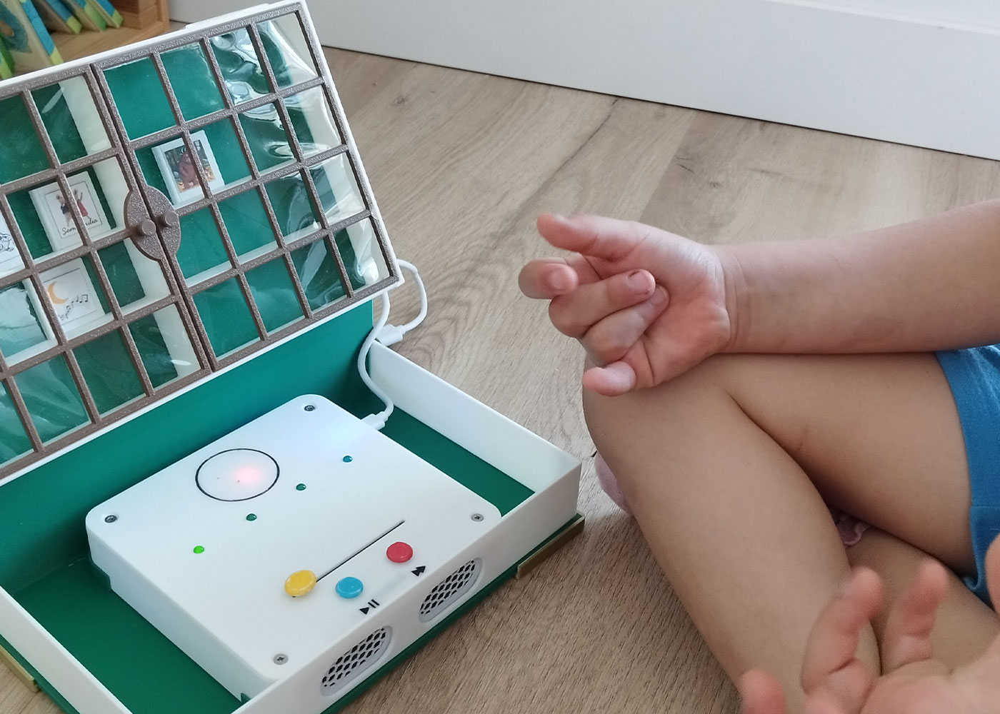
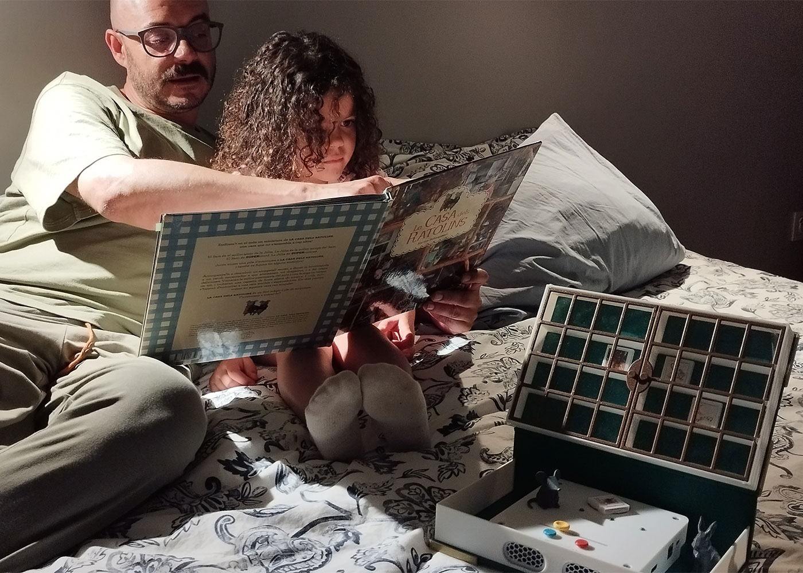

Escuchar juntos sin depender de pantallas.
Propuesta de uso de ENLACE como herramienta de calma, escucha compartida, juego simbólico y acompañamiento narrativo.


Objetivo
Utilizar el dispositivo como apoyo para crear momentos tranquilos de narración, escucha y vínculo, sustituyendo la interacción con pantalla por una relación física con objetos e historias.
Público recomendado
Educación Infantil, primer ciclo de Primaria, bibliotecas de aula, rincones tranquilos y actividades con familias.
Qué aporta
Calma
Ayuda a construir rutinas de escucha pausadas y con menos estímulos visuales.
Vínculo
Favorece la escucha compartida entre infancia, docentes, familias y otros grupos.
Exploración
Permite descubrir historias mediante objetos físicos, manipulación y juego simbólico.
Propuestas de uso
Rincón de escucha
Colocar ENLACE en un espacio tranquilo con cojines, luz suave y pocas fichas disponibles.
Escucha compartida
Escuchar una historia en grupo y conversar después sobre personajes, emociones y sonidos.
Historias familiares
Incorporar voces de familiares, docentes o personas mayores para reforzar memoria y vínculo.
Juego libre
Permitir que las niñas y niños exploren qué ocurre al acercar objetos al dispositivo.
Dimensión interetapas
Infantil recibe un dispositivo construido por Secundaria y lleno de historias creadas por Primaria. De esta forma, la escucha se convierte en una experiencia colectiva: otros grupos han fabricado y narrado para que los más pequeños puedan descubrir, jugar y compartir.
Observación pedagógica
Atención
Observar si el dispositivo favorece tiempos de escucha más calmados.
Interacción
Valorar cómo se relacionan con las fichas, las historias y las personas adultas.
Conversación
Recoger comentarios, emociones, preguntas y relatos posteriores a la escucha.